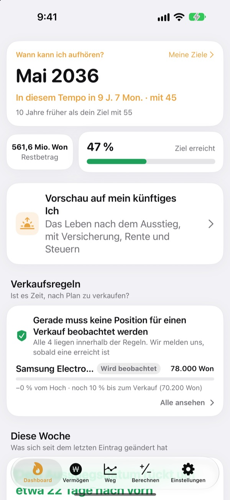
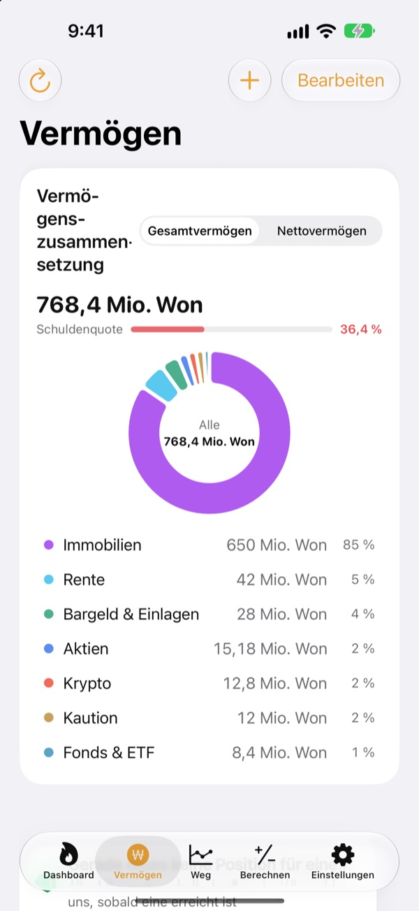
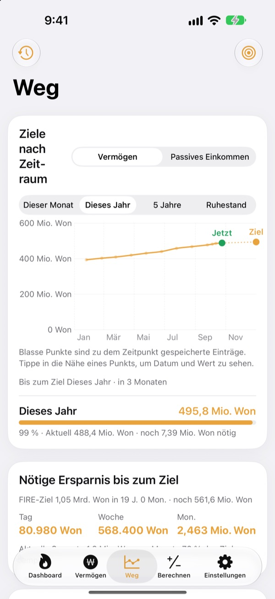
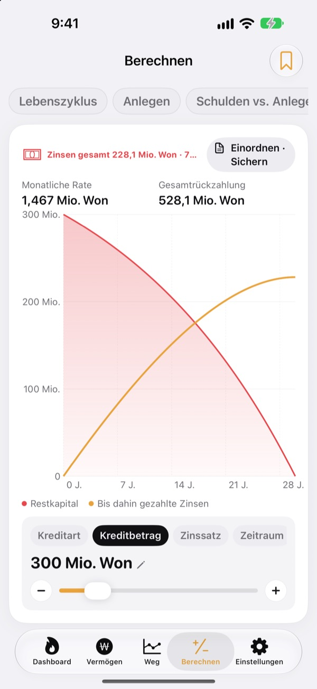

Wann kannst du kündigen?
Die Zahlen sagen es dir.
Trag ein, was du ausgibst und was du gespart hast, und du siehst den Monat, in dem du gehen könntest. Bei jeder Änderung deines Vermögens erkennst du, ob dieses Datum näher rückt oder sich entfernt.
Kein Konto nötig. Deine Einträge bleiben auf deinem Gerät.

Finde dein Ausstiegsdatum
Verschieb die Regler. Es ist dieselbe Rechnung wie auf dem ersten Bildschirm der App.
Rechnest du immer noch im Kopf, ob du endlich kündigen kannst?
Wenn Girokonto, Depot, Altersvorsorge und Mietkaution an verschiedenen Orten liegen, verschwimmt schon die Gesamtsumme, und dein Ausstiegsdatum bleibt geraten. Toesagak holt alles auf einen Bildschirm und berechnet aus dieser Summe laufend neu, in welchem Monat du aufhören könntest.
Dein ganzes Vermögen auf einem Bildschirm
Immobilien, Aktien, Fonds und ETFs, Altersvorsorge, Bargeld und Guthaben, Kautionen, Krypto und Kredite, nach Art gruppiert, mit Gesamtvermögen, Nettovermögen und Schuldenquote.
Kurse für Aktien und Krypto werden abgerufen, damit die Werte aktuell bleiben, und ein Screenshot deiner Broker-App übernimmt Positionen und Werte in einem Schritt.

Wie viel pro Tag bis zum Ziel
Dieser Monat, dieses Jahr, fünf Jahre und der Ruhestand als Ziele, zusammen mit deinen bisherigen Einträgen in einem Diagramm. Dazu siehst du, wie viel du pro Tag, Woche oder Monat sparen musst, um auf Kurs zu bleiben.
Ändert sich dein Vermögen, wird der Eintrag der Woche automatisch gespeichert. So entsteht dein Verlauf von selbst.

Erst rechnen, dann entscheiden
Rechner für deinen Vermögensverlauf übers Leben, Geldanlage, Schulden tilgen oder investieren, Kredite, Einlagen und Sparpläne, die Kaufkraft deines Gehalts und Geld in Arbeitsstunden. Verschieb einen Wert und das Diagramm zeichnet sich neu, die vorherige Kurve bleibt gepunktet zum Vergleich.
Benenne und speichere Einstellungen, die du öfter brauchst.

In drei Schritten loslegen
- 1
Ausgaben und Alter eintragen
Grobe Zahlen reichen. Dein Ausstiegsdatum erscheint sofort.
- 2
Vermögen hinzufügen
Je genauer du aufteilst, desto präziser das Datum.
- 3
Ab und zu reinschauen
Wöchentliche Einträge sammeln sich von selbst, und auf Wunsch erinnert dich die App am 1. jedes Monats.
So rechnet die App
- Ziel
- Jahresausgaben nach dem Ausstieg ÷ sichere Entnahmerate (bei 4 % sind das 25 Jahresausgaben)
- Ausstiegsdatum
- Der Monat, in dem dein Nettovermögen plus monatliche Sparrate, verzinst mit der erwarteten Rendite, das Ziel erreicht
- Gesamtvermögen
- Alles, was du besitzt, zusammengerechnet
- Nettovermögen
- Gesamtvermögen minus Schulden wie Kredite
- Fortschritt
- Nettovermögen ÷ Ziel. Lässt sich auch nach passivem Einkommen verfolgen
- Was du anpassen kannst
- Monatliche Ausgaben, Entnahmerate von 2 bis 6 %, erwartete Rendite von 0 bis 12 %, dein Wunschalter für den Ausstieg
Alle Ergebnisse sind Orientierungswerte auf Basis deiner Eingaben und keine Anlageberatung.
Fragen
Wo werden meine Einträge gespeichert?
Nur auf deinem Gerät. Es gibt keine Registrierung, und nichts wird an den Entwickler gesendet. Aktiviere in den Einstellungen die iCloud-Synchronisierung, um über dein eigenes iCloud-Konto dieselben Einträge auf iPhone und iPad zu sehen.
Die Kurse werden nicht aktualisiert.
US-amerikanische und koreanische Aktien, Krypto und Wechselkurse funktionieren ohne Einrichtung. Prüfe deine Internetverbindung und ob Ticker oder Wertpapiercode stimmen. Wohnungspreise stammen aus öffentlichen Immobiliendaten Koreas und brauchen einen kostenlosen Serviceschlüssel, den du in den Einstellungen einträgst.
Was ist der Unterschied zwischen Gesamtvermögen und Nettovermögen?
Das Gesamtvermögen ist alles, was du besitzt, zusammengerechnet. Das Nettovermögen ist dieser Betrag minus Schulden wie Kredite. Dein Ausstiegsdatum basiert auf dem Nettovermögen.
Wie übertrage ich meine Einträge auf ein neues Gerät?
Erstelle in den Einstellungen mit Exportieren eine Sicherungsdatei, leg sie in Dateien, iCloud Drive oder einer E-Mail ab und stell sie auf dem neuen Gerät wieder her. Sicherungsdateien enthalten nie API-Schlüssel. Außerdem bewahrt die App deine 20 neuesten Sicherungen automatisch auf dem Gerät auf.
Wie funktionieren Verkaufsalarme?
Leg für jede Position fest, wie weit sie vom Höchststand fallen darf, oder einen Zielkurs. Wird diese Linie überschritten, bekommst du einen Hinweis. Bei steigenden Kursen bleibt es still. Kurse werden geprüft, wenn du die App öffnest und wenn iOS es im Hintergrund zulässt (meist alle paar Stunden). Es ist also keine Echtzeitüberwachung.
Kann ich meine Zahlen vor anderen schützen?
Aktiviere in den Einstellungen die App-Sperre, dann öffnet sich die App nur mit Face ID oder deinem Code. Bei aktiver Sperre zeigt auch die monatliche Erinnerung keine Zahlen.
Kann ich mich erst umsehen?
Aktiviere in den Einstellungen die Demodaten, um alle Bildschirme mit dem Vermögen einer fiktiven Person auszuprobieren. Schaltest du sie aus, sind deine eigenen Einträge sofort wieder da. Bei aktiver iCloud-Synchronisierung sind Demodaten nicht verfügbar.
Wie lösche ich alle meine Daten?
Wenn du die App löschst, werden alle auf dem Gerät gespeicherten Einträge entfernt. Möchtest du eine Kopie behalten, exportiere vorher in den Einstellungen eine Sicherungsdatei.
Kann ich auf Basis dieser Zahlen investieren?
Die Ergebnisse von Toesagak sind Orientierungswerte auf Basis deiner Eingaben und einer angenommenen Rendite. Sie sind keine Anlageberatung, und die tatsächliche Entwicklung hängt vom Markt und deiner Situation ab.
Fehler, Ideen oder Fragen? Schreib an leeo@kakao.com.